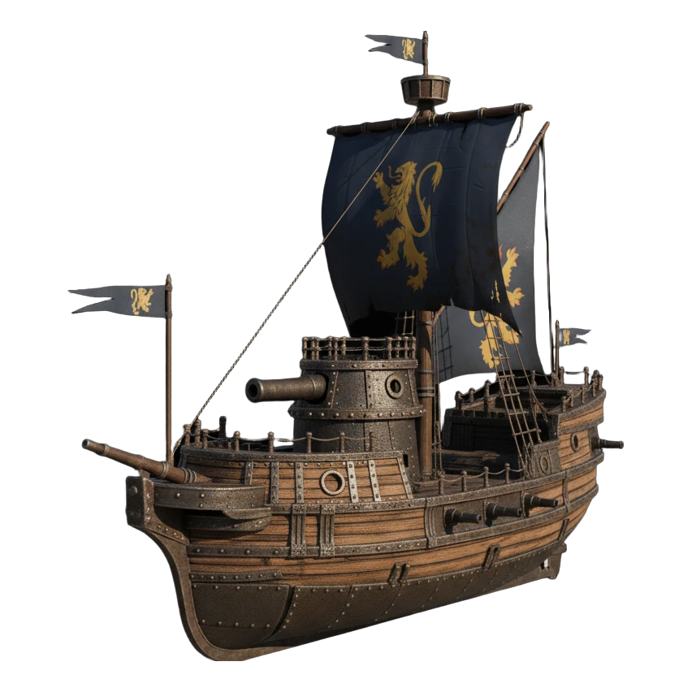
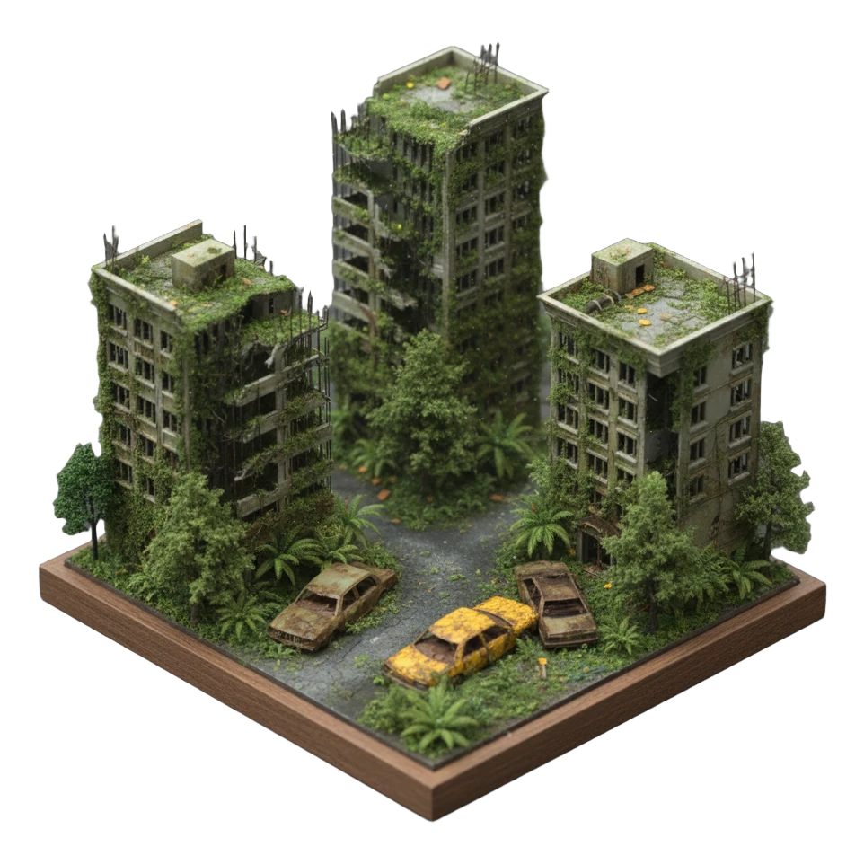
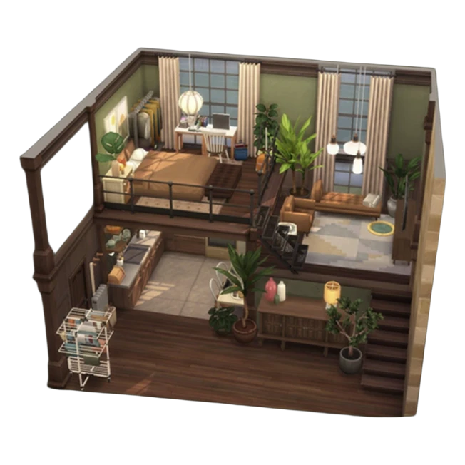

PRISM SCAN
Background Product and Prop 3D Asset Generation Service
Project Overview
PRISM SCAN is a single-image 3D asset service focused on background props, products, and modeling-base assets. Instead of targeting hero-quality close-up assets, the system is designed to help users isolate an object, generate a reusable 3D result, inspect it in a browser viewer, and package it for downstream workflows.
Production Pipeline
Start from a single image and a short target description.
SAM3 identifies the target object and prepares a clean cutout candidate.
The selected transparent object image becomes the canonical downstream input.
Semantic metadata is extracted for category, attributes, material hints, and usage context.
The object-only image is passed to TRELLIS.2 to build the base 3D asset.
Inspect the generated object, rotate it freely, and review mesh-focused output in the browser.
Review semantic summaries and adjust viewer-side appearance before export.
Deliver the result in formats such as GLB, OBJ, FBX, and STL for downstream workflows.
The page currently presents the production flow as a single structured figure. The final pipeline artwork can be swapped into this section directly when the source image file is added.
Demo-ready Input Examples




These examples are selected from demo-ready assets used to validate the service flow and viewer pipeline.
Service Focus
What the service contributes
- Object cutout before generation
- Metadata extraction for packaging
- Viewer-based result inspection
- Mesh preview and output organization
- Background asset workflow integration
What it does not target
- Hero-grade close-up asset creation
- High-fidelity face reconstruction
- Production-final character modeling
- Upstream model redistribution
- One-click hosted cloud inference
Quick Start
git clone git@github.com:jh012403/3D-Viewer-System.git
cd 3D-Viewer-System
conda env create -f environment.yml
conda activate ai3d-mvp
pip install -e .
cp .env.example .env
./scripts/dev/start_prismscan.sh
After startup, open http://127.0.0.1:8080/prismscan-v2.html?mode=image.
Model References
FastVLM
Semantic metadata extraction used for labels, summaries, and package-side metadata.
apple/FastVLM-0.5BTRELLIS.2
Single-image 3D generation runtime used as the main reconstruction head.
microsoft/TRELLIS.2-4BReal-ESRGAN
Optional cutout enhancement path for selected object crops before generation.
xinntao/Real-ESRGANNotes
The current system is built as a service-layer prototype. It is strongest when handling clean object-centric inputs and background prop workflows. Output quality still depends on segmentation quality, visible object coverage, and available GPU memory during TRELLIS.2 inference.